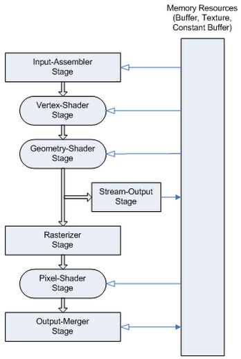
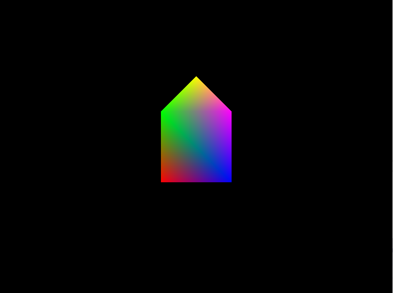
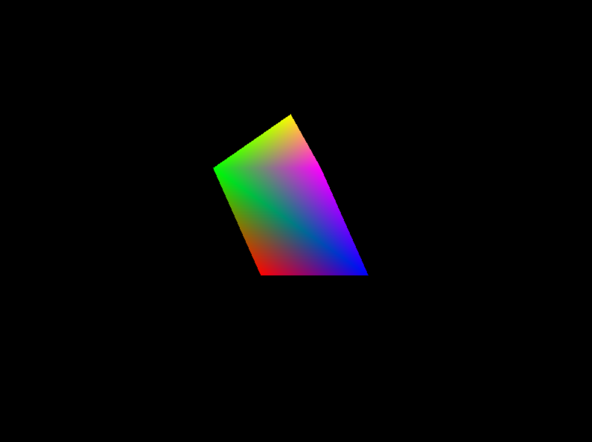
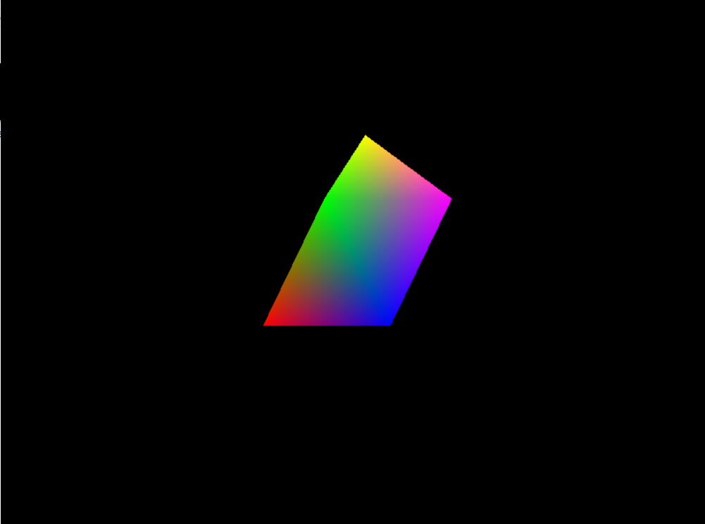
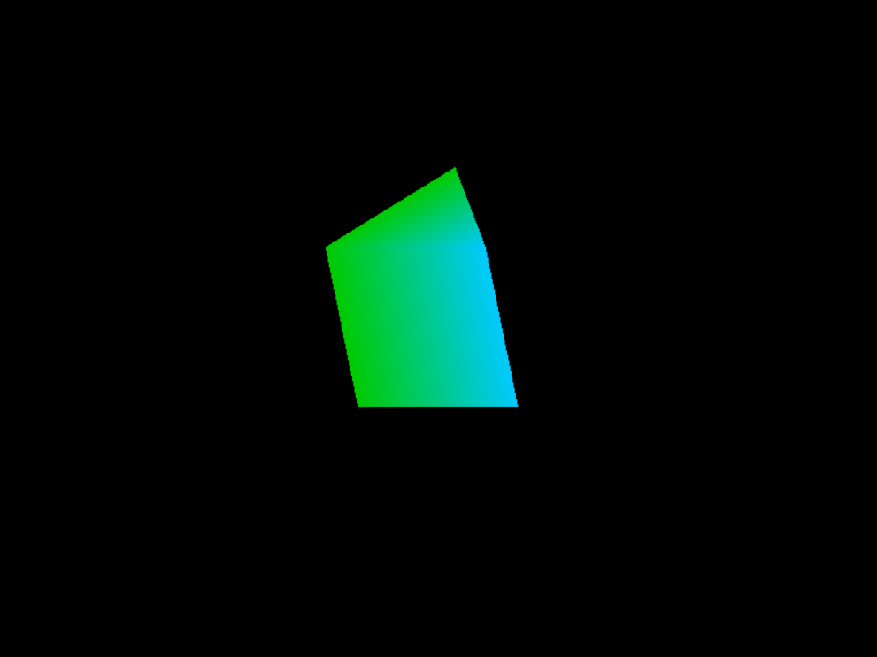

COMP 2501 - Winter 2014 Tutorial #2
Graphics Pipeline
Description:
The purpose of this tutorial is to introduce you to the DirectX graphics pipeline. These are the most fundamental concepts that you need to understand and utilize to render 3D graphics.
To get credit for the tutorial you must complete, or make significant progress, on the problems provided and demonstrate your results to the tutorial TA.
If you cannot complete the tutorial in the time allotted you may demonstrate the completed results to the TA during their office hours.
These tutorials are based on the Rastertek set of tutorials.
Instructions:
Overview
In this tutorial we're going to address something that we glossed over in the last tutorial, and that is the graphics pipeline.
From Wikipedia:
Graphics pipeline or rendering pipeline refers to the sequence of steps used to create a 2D raster representation of a 3D scene. Plainly speaking, once you have created a 3D model, for instance, in a video game, or any other 3d computer animation, the graphics pipeline is the process of turning that 3D model into what the computer displays.

This is an image of the DirectX11 graphics pipeline, taken from the Microsoft Dev Center site.
The stages of data flow that we are concerned about are as follows:
Shaders in DirectX11 are written using a language called HLSL (High-Level Shader Language). The language is very similar to C in syntax.
Let's get started. Open Microsoft Visual Studio 2012 and open the project found in the tutorial2 folder.
Problem 1)
Open up the color.vs file (under the Shader Files directory) and take a look around.
Notice the MatrixBuffer constant buffer. This buffer is created in your C++ code and passed into the GPU to the shaders. You can use many types of variables in the constant buffer such as int or float and then set them externally for the shader program to use.
Moving forwards, we have our type definitions. We will use different types such as float4 that are available to HLSL which make programming shaders easier and readable. In this example we are creating types that have x, y, z, w position vectors and red, green, blue, alpha colors. The POSITION, COLOR, and SV_POSITION are semantics that convey to the GPU the use of the variable. We have to create two different structures here since the semantics are different for vertex and pixel shaders even though the structures are the same otherwise. POSITION works for vertex shaders and SV_POSITION works for pixel shaders while COLOR works for both. If you want more than one of the same type then you have to add a number to the end such as COLOR0, COLOR1, and so forth.
The vertex shader is called by the GPU when it is processing data from the vertex buffers that have been sent to it. This vertex shader which is named ColorVertexShader will be called for every single vertex in the vertex buffer. The input to the vertex shader must match the data format in the vertex buffer as well as the type definition in the shader source file which in this case is VertexInputType. The output of the vertex shader will be sent to the pixel shader. In this case the output type is called PixelInputType which is defined above as well.
With that in mind you see that the vertex shader creates an output variable that is of the PixelInputType type. It then takes the position of the input vertex and multiplies it by the world, view, and then projection matrices. This will place the vertex in the correct location for rendering in 3D space according to our view and then onto the 2D screen. After that the output variable takes a copy of the input color and then returns the output which will be used as input to the pixel shader. Also note that I do set the W value of the input position to 1.0 otherwise it is undefined since we only read in a XYZ vector for position. If you'd like to know more about why we use the W value, see here.
Run the program and see what you get:

The output is the same as our last tutorial. Let's make it a little more interesting. We're going to add a wave effect to the house that will be based on a function of time. As it stands right now, our vertex shader has no idea what time it is. We need to send it along from the CPU. The way to do this in DirectX is with the Constant Buffer.
Open up the colorshaderclass.h. Notice we have a struct called MatrixBufferType. This is the type we send to the shaders. We need to give it an extra value. Replace this:
struct MatrixBufferType
{
XMFLOAT4X4 world;
XMFLOAT4X4 view;
XMFLOAT4X4 projection;
};
With this:
struct MatrixBufferType
{
XMFLOAT4X4 world;
XMFLOAT4X4 view;
XMFLOAT4X4 projection;
float time;
XMFLOAT3 padding;
};
Note: The "padding" property will not be used, it is only there because we need to align our type to 16 bytes. This means that the combined size of all the properties must be a multiple of 16.
Next we need to populate this time value.
In colorshaderclass.cpp, scroll down to the SetShaderParameters method. Notice we are keeping track of time:
// Update the time
static float t = 0.0f;
static ULONGLONG timeStart = 0;
ULONGLONG timeCur = GetTickCount64();
if( timeStart == 0 )
timeStart = timeCur;
t = ( timeCur - timeStart ) / 1000.0f;
Then notice further down, we are initializing and then assigning values to a constant buffer of MatrixBufferType:
// Get a pointer to the data in the constant buffer.
dataPtr = (MatrixBufferType*)mappedResource.pData;
// Copy the matrices into the constant buffer.
dataPtr->world = worldMatrix;
dataPtr->view = viewMatrix;
dataPtr->projection = projectionMatrix;
We've set the world, view, and projection matrices, but we still need to set the time property. Add this:
dataPtr->time = t;
Now we've added a property to the constant buffer and assigned it a value. Now, all we need to do is set up the shaders to receive this new property. Head over to your color.vs file.
cbuffer MatrixBuffer : register(b0)
{
matrix worldMatrix;
matrix viewMatrix;
matrix projectionMatrix;
};
This typedef has to be updated to be in line with the one we set in our C++ code. Change it to this:
cbuffer MatrixBuffer : register(b0)
{
matrix worldMatrix;
matrix viewMatrix;
matrix projectionMatrix;
float time;
};
Note: there is no need to include the "padding" property as we will not be using it.
We now have our pipeline set up to pass along the time value, now we just need to make use of it. All of the vertex shader calculations take place in the ColorVertexShader method, take a look at it now.
Before the "return output;" line, add some code that will change the position of the vertex based on the given time. For an interesting effect, try this:
// Make the vertex move back and forth
output.position.x += sin( output.position.y/2 + 3*time );
Run the application. Your house should be wobbling back and forth like this:


Problem 2)
Now we're going to experiment with the Pixel Shader. Unfortunately, in the current implementation, the constant buffer is not being used in the pixel shader. Let's change that.
First, add the MatrixBuffer type to the top of the color.ps file so that our pixel shader knows how to interpret the buffer when it receives it. Now we have to set up the C++ code to actually pass the constant buffer to the pixel shader.
In colorshaderclass.cpp, at the end of the SetShaderParameters() method, you'll see:
// Finally set the constant buffer in the vertex shader with the updated values.
deviceContext->VSSetConstantBuffers(bufferNumber, 1, &m_matrixBuffer);
This is where we specified that we wanted to send our constant buffer to the vertex shader. All you need to do is specify that you'd like it sent to the pixel shader as well:
// Finally set the constant buffer in the vertex shader with the updated values.
deviceContext->VSSetConstantBuffers(bufferNumber, 1, &m_matrixBuffer);
deviceContext->PSSetConstantBuffers(bufferNumber, 1, &m_matrixBuffer);
Great, that's all there is to it. Just open up your color.ps file and fiddle around in the ColorPixelShader method. You can try something like the following to get some color changes going:
input.color.x = sin(time);
input.color.y = cos(time);
When you run your program you should see something like the following:

Although the shaders might seem to provide pretty limited functionality at the moment, they're actually a very powerful set of tools. Later on in the tutorials we'll see how we can use the vertex and pixel shaders for other things, such as textures and lighting calculations. For the time being, just try experimenting with producing different colors and transformations.